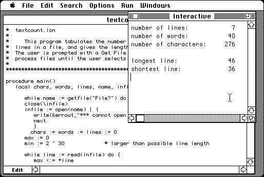

Download
mep1.zip (274K) ProIcon 2.0.5 disk 1 repackaged into a zipped hfs disk image and checksum file. The disk image can be mounted with Mini vMac.
mep1.hqx (549K) ProIcon 2.0.5 disk 1 in the original format.mep2.zip (262K) ProIcon 2.0.5 disk 2 repackaged into a zipped hfs disk image and checksum file. The disk image can be mounted with Mini vMac.
mep2.hqx (471K) ProIcon 2.0.5 disk 2 in the original format.proicon.pdf (2.1M) ProIcon 2.0 for Macintosh manual.
copyright: Mark Emmer and Ralph Griswold
mod date: Mar 31, 1994
license: public domain
from url :
icon binaries [for] old mac
Icon Programming Language. For "System Version 6.0.1 or higher". More info at http://www.cs.arizona.edu/icon/.

If you find these downloads useful, please consider helping the Gryphel Project, which hosts them.
Here are the md5 checksums for the downloads, signed with Gryphel Key 5:
--------- GRY SIGNED TEXT --------- 271fd8e86cb1c215a9bf93147466942e mep1.zip aee6622ef4a4dcdae385fc51f4bb2bab mep1.hqx 4b300b0bf94b98a8b92b264fc19227b6 mep2.zip 39e5b6412e0c20c98a8ff59353bf2007 mep2.hqx 86d51a66ccf10363ca8c542f5783fe8a proicon.pdf ------- BEGIN GRY SIGNATURE ------- Gry/4Xa8CFcUzxdN/E5aWtzqdAuY9qRh2JSc91NJJiYyUlfp2lzu/v2i/nqC4OEV /qTW+b5swWOzumvG5xAFanektJ80s44m395SqkSFIivffSfiRSx5lvSjCl9kYiMU 3Sqm/5UOzxVy46JumWG3bsaLj7Yosja0gVOyLXsYDZm1CMOEptYwMQ8oEYcJuJjW -------- END GRY SIGNATURE --------